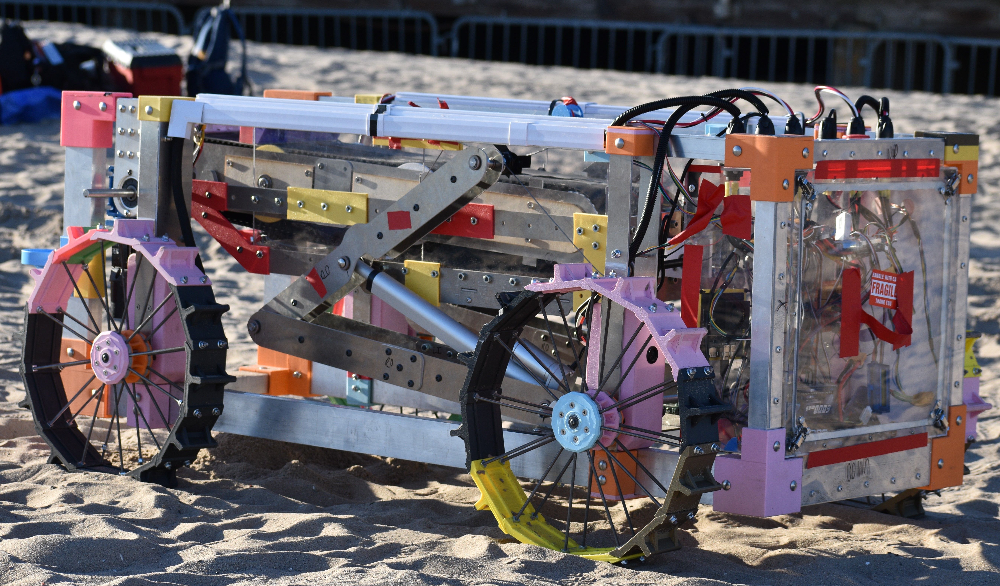

September 2022 - December 2022

In this project, I developed a device to help visually impaired individuals navigate by integrating ultrasonic sensors, a Raspberry Pi, and Bluetooth technology. I created prototypes using 3D printing and laser cutting, and documented the project with reports and presentations. The device, which detected obstacles within 50 cm, was completed three weeks early and earned an invitation to a school-wide showcase.
September 2022 - May 2023
In this project, I designed and manufactured a deposition bin for a rover competing in the NASA Lunabotics Challenge. The bin used perforated aluminum sheets to filter the regolith and measured the collected weight with load cells. The design attempted to adjust for excavation angle with a ball bearing roller system. 3D CAD models and 2D drawings were created in Onshape, and fabrication involved water jetting and 3D printing. The bin effectively filtered regolith and measured its weight, though the ball bearing system could not be integrated due to time and material constraints.
September 2023 - May 2024
As a Mechanical Techincal Lead for RDT, I collaborated with other leads on the high-level design of a rover for the NASA Lunabotics Challenge. I led the excavation team, and we designed and tested a conveyor system that could both excavate and deposit lunar regolith. Using Onshape, we created and integrated a detailed 3D CAD model of the conveyor into the rover's master assembly. Prototypes were fabricated with 3D printing, laser cutting, and water jetting, allowing for design testing and refinement. The final design successfully excavated and transported regolith to the deposition bin at the required rate.

As a System Engineer in RDT, I created a Concepts of Operations chart and project schedule for a NASA Lunabotics rover and drafted system requirements for the mechanical engineering team, as well as instrumentation and control documents. I also identified mission requirements and developed acceptable system requirements, coordinating with electrical and software engineers to integrate all subsystem needs. My communication with mechanical engineering leads ensured that requirements were met. The result was the successful verification of interface implementation and validation that the system met all mechanical requirements and constraints.

As a Team Lead for RDT, my co-lead and I have implemented a new workflow for the team to improve communication between the mechanical, electrical, and software teams by providing structured time for the leads of each competency to meet, discuss, and design the robot. This approach aims to streamline communication, ensure equal input from all competencies, and enhance the efficiency of the design process. Additionally, we've developed a project timeline with milestones and a preliminary budget, and are currently working with system engineers on the Concept of Operations and initial requirements.